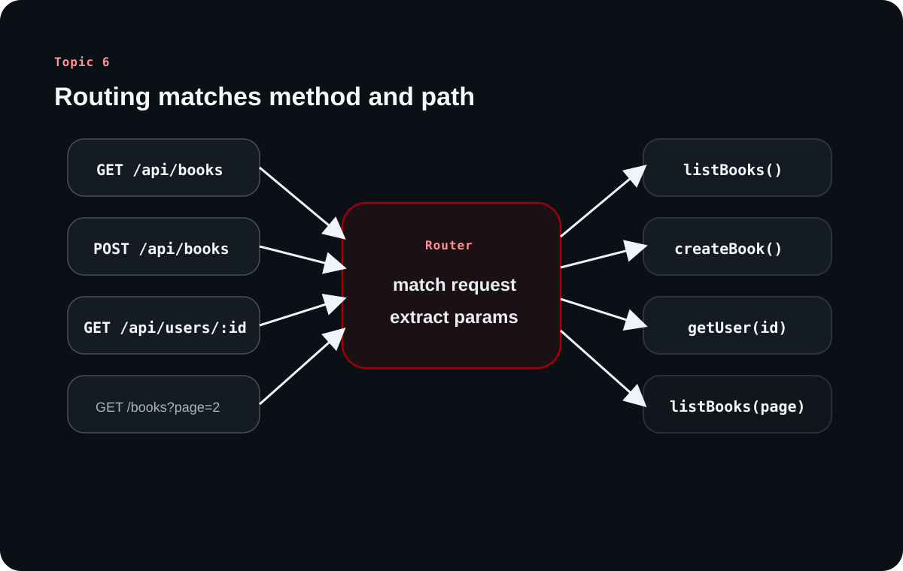

Routing in Backend: How Requests Find Their Way Home
Topic 6 explains the part of the server that decides where a request belongs. The source moves from a simple idea?method plus path?to the richer patterns real APIs use when they need clarity, flexibility, and backward compatibility.
Routing is the bridge between HTTP intent and backend execution. It answers the question that methods alone cannot answer: which exact resource and handler should this request reach?
Chapter 1
Routing starts with a simple lookup rule
The source defines routing as the server-side process of turning a request into the correct handler call.
Methods say what, routes say where
HTTP methods express intent such as read, create, update, or delete. Routing contributes the missing half of the meaning by telling the server which resource that intent applies to.
Together, method and path form the real routing key. That is why GET /api/books and POST /api/books are not the same route in practice, even though the visible path string is identical.
The server maps the key to a handler
A router exists so the server can decide which handler or controller should run. Once the correct handler is chosen, business logic can continue with validation, service calls, and persistence.
Thinking in terms of routing keys helps beginners read frameworks more easily because the syntax may change, but the job stays the same.
Learning diagram

The same path can lead to different handlers when paired with different methods, and parameters are extracted before the handler runs.
Chapter 2
Static and dynamic routes solve different problems
The note contrasts fixed paths with parameterized paths so the role of each becomes easier to see.
Static routes are fixed resource addresses
A static route has no variable path segments. It always points to the same endpoint shape, such as /api/books. These routes are predictable, easy to scan, and often represent collection-level resources.
They are the most direct expression of a stable endpoint and are usually the easiest routes to introduce first in an API.
Dynamic routes capture identity inside the path
Dynamic routes introduce placeholders such as /api/users/:id. When a request arrives, the router extracts the value and passes it downstream as a route or path parameter.
The source highlights that these parameters are treated as strings initially, even when they look numeric. That matters because downstream validation and transformation still need to happen.
Chapter 3
Path parameters and query parameters are not interchangeable
A useful part of the source is the distinction between semantic identity in the path and flexible modifiers in the query string.
Use the path for identity and the query for modifiers
Path parameters usually identify the resource itself: a user ID, a post ID, a tenant slug. Query parameters are better for optional controls such as search terms, pagination, filtering, or sorting.
That separation keeps URLs more expressive. A path tells you what the resource is, while the query string tells you how the client wants to view or constrain it.
Clarified note
Query parameters are common with GET requests, but they are not exclusive to GET. They are best understood as URL-level modifiers rather than method-specific magic.
Pagination shows why query parameters exist
The source uses pagination as a clean example. A client can request /api/books?page=2 while the server responds with metadata that explains the current slice of the dataset.
This is a good teaching example because the page number changes how the collection is viewed, but it does not change what the collection fundamentally is.
Property
Meaning
total
Total number of items available
currentPage
The page currently returned
totalPages
How many pages exist in total
limit
How many items are shown per page
Chapter 4
Nested routes express relationships
The source treats nested routes as a practical API design habit rather than a separate routing universe.
Nested paths make resource hierarchy visible
Routes like /api/users/123/posts/456 communicate a relationship between resources directly in the URL. The nesting tells you that the post is being addressed in the context of a particular user.
This makes APIs easier to reason about when the relationship itself matters, though the source also implies that the extra depth should serve real meaning rather than become decorative complexity.
/api/users for the collection
/api/users/123 for one user
/api/users/123/posts for that user's posts
/api/users/123/posts/456 for a specific post of that user
Chapter 5
Versioning and catch-all routes keep APIs operable
The last source ideas are about what happens when APIs grow, change, or receive requests they do not understand.
Versioning protects consumers during change
Route versioning, such as /api/v1/products and /api/v2/products, gives teams a way to evolve contracts without breaking every existing client at once. It is a compatibility tool as much as a naming decision.
The note frames this as gradual migration: new clients can move forward while older clients continue to function until deprecation is complete.
Catch-all routes improve the failure experience
A catch-all route handles requests that do not match any defined route. Instead of leaving the client with a confusing failure path, the server can return a clear not-found response or guidance about the endpoint being invalid.
That small design choice improves developer experience because undefined routes fail in a predictable way.
Overall takeaway
What to remember
Routing is the backend mechanism that turns method-plus-path into handler execution. Static paths, dynamic parameters, query strings, nested resources, versioning, and catch-all routes are all ways of making that mapping clearer, more expressive, and safer to evolve.